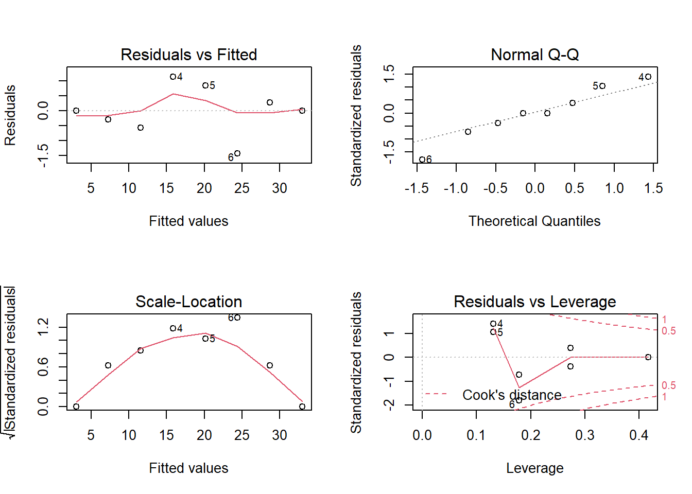
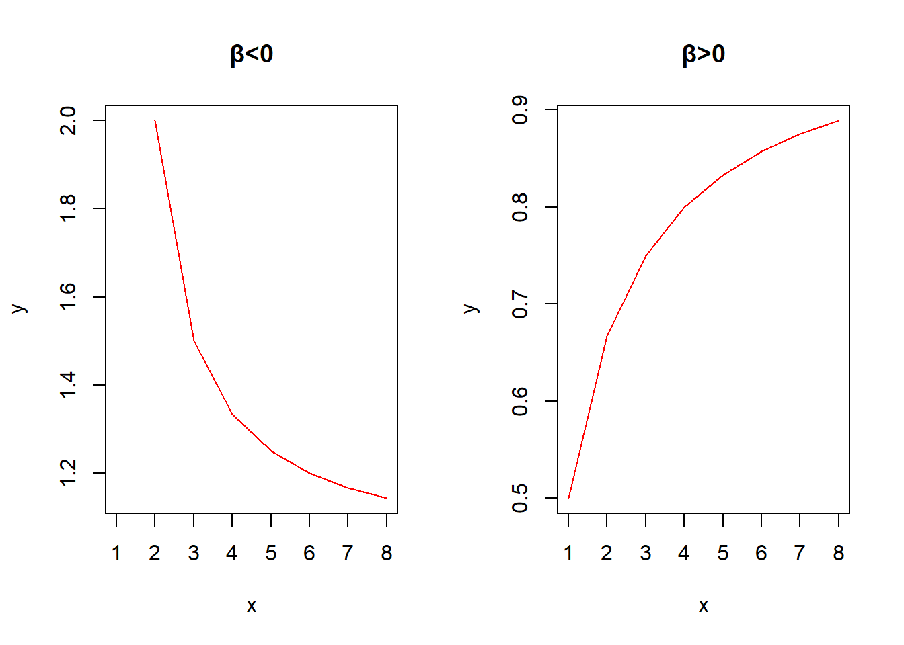

第 9 章 Linear Regression
本篇是第九章，内容是回归分析（主要以线性回归为主）。回归分析是数理统计、数理分析中最基础（也可以说是最重要）的一个分析，所以这一章内容相对来说也较多。
9.1 变量间的关系
确定型关系vs不确定型关系。
- 函数关系——一一对应的确定型关系设有两个变量x和y，变量y随变量x一起变化，并完全依赖于x，当变量x取某个数值时，y依确定的关系取相应的值，则称y是x的函数，记为y=f(x)，其中x称为自变量，y称为因变量各观测点落在一条线上。
- 相关关系(correlation)——变量间关系不能用函数关系精确表达。一个变量的取值不能由另一个变量唯一确定。当变量x取某个值时， 变量y的取值可能有几个。各观测点分布在直线周围。相关关系包括了线性相关（正相关、负相关）、非线性相关、完全相关（正相关、负相关）、不相关。

除了如上的图，可以看下面的链接——关于相同统计量不同数据的一篇外文。
相关系数(correlation coefficient)
- 对变量之间关系密切程度的度量（只关心密切程度，无关因果关系）；
- 对两个变量之间线性相关程度的度量称为简单相关系数；
- 若相关系数是根据总体全部数据计算的，称为总体相关系数，记为ρ；
- 若是根据样本数据计算的，则称为样本相关系数，记为 r。
总体相关系数的计算公式：
\[\rho=\frac{\sigma_{xy}}{\sigma_x\sigma_y}=\frac{E[(X-E(X))(Y-E(Y))]}{\sqrt{E(X-E(X))^2}\sqrt{E(Y-E(Y))^2}}\]
相关系数特点
- 无量纲(Unitfree)；
- \(\rho\)的取值范围是 [-1,1]；
- \(|\rho|\)=1，为完全相关（\(\rho\)=1为完全正相关； \(\rho\)=-1为完全负相关）；
- \(\rho\)=0，不存在线性相关关系；
- \(-1\leq \rho<0\)，为负相关，\(0<\rho \leq 1\)，为正相关；
- \(|\rho|\)越趋于1表示线性关系越密切；\(|\rho|\)越趋于0表示线性关系越不密切；
- 若X与Y相互独立，则\(\rho\)=0，但\(\rho\)=0，X与Y不一定相互独立；
- 若\(\rho\)= 0，且X与Y服从正态分布，则X与Y相互独立。
样本相关系数计算公式：
\[r=\frac{\sum(x_i-\bar x)(y_i-\bar y)}{\sqrt{\sum(x_i-\bar x)^2\cdot\sum(y_i-\bar y)^2}}\]
或
\[r=\frac{n\sum x_iy_i-\sum x_i\sum y_i}{\sqrt{n\sum x_i^2-(\sum x_i)^2}\cdot\sqrt{n\sum x_i^2-(\sum x_i)^2}}\]
样本相关系数特点
- 无量纲(Unitfree)；
- r的取值范围是 [-1,1]；
- |r|=1，为完全相关（r=1为完全正相关；r=-1为完全负相关）；
- r=0，不存在线性相关关系；
- \(-1\leq r<0\)为负相关，\(0<r\leq1\)为正相关；
- |r|越趋于1表示线性关系越密切；|r|越趋于0表示线性关系越不密切；
对变量之间关系密切程度的度量，只关心密切程度，无关因果关系。 比如撑伞的人数和降雨量的相关系数非常高。但是我们不能说因为撑伞的人多了，所以降雨量大。
r的抽样分布
r的抽样分布随总体相关系数和样本容量的大小而变化。当样本数据来自服从正态分布的总体时，随着n的增大，r的抽样分布趋于正态分布，尤其是在总体相关系数\(\rho\)很小或接近0时，趋于正态分布的趋势非常明显。而当\(\rho\)远离0时，除非n非常大，否则r的抽样分布呈现一定的偏态。当\(\rho\)为较大的正值时， r呈现左偏分布；当\(\rho\)为较小的负值时， r呈现右偏分布。只有当\(\rho\)接近于0，而样本容量n很大时，才能认为r是接近于正态分布的随机变量。
相关系数的显著性检验步骤
检验两个变量之间是否存在线性相关关系，等价于对回归系数\(\beta_1\)的检验。采用R. A. Fisher提出的t检验。检验的步骤为：
（1） 提出假设：\(H_0:\rho=0;H_1:\rho \neq0\)
（2） 计算检验的统计量： \(t=r\sqrt{\frac{n-2}{1-r^2}}\sim t(n-2)\)
（3） 确定显著性水平\(\alpha\)，并作出决策。
- 若\(|t|>t_{\alpha/2}\)，拒绝\(H_0\)。
- 若\(|t|<t_{\alpha/2}\)，不能拒绝\(H_0\)。
9.2 回归分析和简单线性回归分析
9.2.1 回归分析
什么是回归分析(Regression)?
从一组样本数据出发，确定变量之间的数学关系式。对这些关系式的可信程度进行各种统计检验，并从影响某一特定变量的诸多变量中找出哪些变量的影响显著， 哪些不显著。利用所求的关系式，根据一个或几个变量的取值来预测或控制另一个特定变量的取值，并给出这种预测或控制的精确程度。
回归分析与相关分析的区别
相关分析中，变量x变量y处于平等的地位；回归分析中，变量y称为因变量，处在被解释的地位，x称为自变量，用于预测因变量的变化； 相关分析中所涉及的变量x和y都是随机变量；回归分析中，因变量y是随机变量，自变量x可以是随机变量，也可以是非随机的确定变量； 相关分析主要是描述两个变量之间线性关系的密切程度；回归分析不仅可以揭示变量x对变量y的影响大小，还可以由回归方程进行预测和控制。
回归模型(regression model)——回答“变量之间是什么样的关系？”方程中运用1个数值型因变量(响应变量)作为被预测的变量；1个或多个数值型或分类型自变量 (解释变量)作为用于预测的变量。主要用于预测和估计。回归模型的类型包括一元回归模型（线性和非线性）和多元回归模型（线性和非线性）。
接下来先从简单线性回归分析讲起。
9.2.2 简单线性回归分析
简单线性回归(Simple Linear Regression)——涉及一个自变量的回归，因变量y与自变量x之间为线性关系。被预测或被解释的变量称为因变量(dependent variable)，用y表示；用来预测或用来解释因变量的一个或多个变量称为自变量(independent variable)，用x表示。因变量与自变量之间的关系用一个线性方程来表示。描述因变量y如何依赖于自变量x和误差项ε的方程称为回归模型(Regression Model，定义如前)。
（1）简单线性回归模型的表示形式
\[y=\beta_0+\beta_1 x+\varepsilon\]
y是x的线性函数(部分)加上误差项(residual/random error term)。线性部分反映了由于x的变化而引起的y的变化。误差项ε是随机变量。反映了除x和y之间的线性关系之外的随机因素对y的影响，是不能由x和y之间的线性关系所解释的变异性。\(\beta_0\)和\(\beta_1\)称为模型的参数(interception, slope)。
（2）简单线性回归模型的基本假定
误差项\(\epsilon\)是一个期望值为0的随机变量，即E(\(\epsilon\))=0。对于一个给定的x值，y的期望值为
\[E(y)=\beta_0+\beta_1x\]
对于所有的x值\(\epsilon\)的方差\(\sigma^2\)都相同；误差项\(\epsilon\)是一个服从正态分布的随机变量，且相互独立。即\(\epsilon\sim N(0,\sigma^2)\);独立性意味着对于一个特定的x值，它所对应的\(\epsilon\)与其他x值所对应的\(\epsilon\)不相关；对于一个特定的x值， 它所对应的y值与其他x所对应的y值也不相关。
（3）简单线性回归方程(regression equation)
描述y的平均值或期望值如何依赖于x的方程称为回归方程；简单线性回归方程的形式如下
\[E(y)=\beta_0+\beta_1x\]
方程的图示是一条直线，也称为直线回归方程。\(\beta_0\)是回归直线在y轴上的截距(interception)，是当x=0时y的期望值。\(\beta_1\)是直线的斜率(slope)，称为回归系数，表示当x每变动一个单位时，y的平均变动值。
（4）估计的回归方程(estimated regression equation)
总体回归参数\(\beta_0\)和\(\beta_1\)是未知的，必须利用样本数据去估计。用样本统计量\(b_0\)和\(b_1\)代替回归方程中的未知参数\(\beta_0\)和\(\beta_1\)，就得到了估计的回归方程。简单线性回归中估计的回归方程为
\[\hat y=b_0+b_1x\]
其中：\(b_0\)是估计的回归直线在y轴上的截距，\(b_1\)是直线的斜率，也表示x每变动一个单位时，y的平均变动值，\(\hat y\)表示一个给定的x的值对应的y的估计值。
（5）最小二乘估计
使因变量的观察值与估计值之间的离差平方和达到最小来求得\(b_0\)和\(b_1\)的方法。即
\[argmin \sum_{i=1}^n(y_i-\hat y_i)^2=\sum_{i=1}^n(y_i-b_0-b_ix_i)^2\]
用最小二乘法拟合的直线来代表x与y之间的关系与实际数据的误差平方和比其他任何直线都小。 根据最小二乘法的要求，可得到如下的公式：
\[\begin{cases}b_1=\frac{n\sum_{i=1}^nx_iy_i-(\sum_{i=1}^nx_i)(\sum_{i=1}^ny_i)}{n\sum_{i=1}^nx_i^2-(\sum_{i=1}^nx_i)^2}\\b_0=\bar y-b_1\bar x\end{cases}\]
最小二乘估计的性质
- 所有残差的和为0。所有残差的平方和最小；
- 回归直线经过变量X与Y的均值；
- 是\(\beta_0\)和\(\beta_1\)的无偏估计。
在R语言中，简单线性回归的代码如下：
（7）回归直线的拟合优度
变差
因变量 y 的取值是不同的， y 取值的这种波动称为变差。 变差来源于两个方面：
- 由于自变量 x 的取值不同造成的。
- 除 x 以外的其他因素(如x对y的非线性影响、测量误差等)的影响。对一个具体的观测值来说， 变差的大小可以通过该实际观测值与其均值之差\(y-\bar y\)来表示。
离差平方和的分解(三个平方和的关系与意义)
\[\sum_{i=1}^n(y_i-\bar y)^2=\sum_{i=1}^n(\hat y_i-\bar y)^2+\sum_{i=1}^n(y_i-\hat y)^2\]
从左至右分别为SST，SSR，SSE。所以就有SST=SSR+SSE。
总平方和(SST)——反映因变量的 n 个观察值与其均值的总离差；
回归平方和(SSR)——反映自变量 x 的变化对因变量 y 取值变化的影响，或者说，是由于x与y之间的线性关系引起的y的取值变化，也称为可解释的平方和；
残差平方和(SSE)——反映除x以外的其他因素对y取值的影响，也称为不可解释的平方和或剩余平方和。
判定系数R²(coefficient of determination)
回归平方和占总离差平方和的比例。
\[R^2=\frac{SSR}{SST}=\frac{\sum_{i=1}^n(\hat y_i-\bar y)^2}{\sum_{i=1}^n(y_i-\bar y)^2}=1-\frac{\sum_{i=1}^n(y_i-\hat y)^2}{\sum_{i=1}^n(\hat y_i-\bar y)^2}\]
- 反映回归直线的拟合程度；
- 取值范围在[0,1]之间；
- \(R^2\rightarrow1\)，说明回归方程拟合的越好；\(R^2\rightarrow0\)，说明回归方程拟合的越差；
- 对简单线性回归，判定系数等于相关系数的平方，\(r=(b_1\)的符号)\(sqrt(R^2)\)。
估计标准误差(standard error of estimate) > * 实际观察值与回归估计值离差平方和的均方根； > * 反映实际观察值在回归直线周围的分散状况； > * 对误差项\(\epsilon\)的标准差\(\sigma\)的估计， 是在排除了x对y的线性影响后，y随机波动大小的一个估计量； > * 反映用估计的回归方程预测y时预测误差的大小。
计算公式为 \[s=\sqrt{\frac{\sum_{i=1}^n(y_i-\hat y_i)^2}{n-2}}=\sqrt{\frac{SSE}{n-2}}=\sqrt{MSE}\]
显著性检验
- 线性关系的显著性检验：检验自变量与因变量之间的线性关系是否显著，即检验x与y之间是否具有线性关系，或者说，检验自变量x对因变量y的影响是否显著；
- 回归系数的显著性检验：检验回归系数是否不等于0；
- 在简单线性回归中，线性关系的显著性检验等价于回归系数的显著性检验。
线性关系的检验
将回归均方(MSR)同残差均方(MSE)加以比较， 应用F检验来分析二者之间的差别是否显著。
- 回归均方：回归平方和SSR除以相应的自由度(自变量的个数p)；
- 残差均方：残差平方和SSE除以相应的自由度(n-p-1)。
- 提出假设：\(H_0:\beta_1=0\)线性关系不显著；
- 计算检验统计量F：\(F=\frac{SSR/1}{SSE/(n-2)}=\frac{MSR}{MSE}\sim F(1,n-2)\)
- 确定显著性水平\(\alpha\)，并根据分子自由度1和分母自由度n-2找出临界值\(F_\alpha\)。
- 作出决策：若\(F>F_\alpha\)，拒绝\(H_0\)； 若\(F<F_\alpha\)，不拒绝\(H_0\)。
回归系数的检验(检验步骤)
- 提出假设:\(H_0:\beta_1=0\)(没有线性关系)，\(H_1:\beta_1\neq 0\)(有线性关系)
- 计算检验的统计量：\(t=\frac{b_1}{s_{b_1}}\sim t(n-2)\)
- 确定显著性水平\(\alpha\)，并进行决策：\(|t|> t_{\alpha/2}\),拒绝\(H_0\);\(|t|< t_{\alpha/2}\)，不拒绝\(H_0\)
显著性检验的几点注意
显著性关系的结论不意味着因果关系。显著性关系的结论也不能推出线性关系的结论，仅能说在x的样本观测之范围内，x和y是相关的，而且一个线性关系只揭示了y的变异的主要部分。当样本容量很大时，对于小的b1值也能得到统计上是显著的结果。
9.3 利用回归方程进行估计和预测
根据自变量x的取值估计或预测因变量y的取值。
估计或预测的类型
（1）点估计：y的平均值的点估计，y的个别值的点估计；
（2）区间估计：y的平均值的置信区间估计，y的个别值的预测区间估计。
（1）点估计
对于自变量x的一个给定值\(x_0\)，根据回归方程得到因变量y的一个估计值\(\hat y_0\)。点估计值有y的平均值的点估计和y的个别值的点估计。在点估计条件下，平均值的点估计和个别值的的点估计是一样的，但在区间估计中则不同。
y的平均值的点估计：利用估计的回归方程， 对于自变量x的一个给定值\(x_0\)，求出因变量y的平均值的一个估计值\(E(y_0)\)，就是平均值的点估计。
y的个别值的点估计：利用估计的回归方程，对于自变量x的一个给定值\(x_0\)，求出因变量y的一个个别值的估计值\(\hat y_0\)，就是个别值的点估计。
（2）区间估计
点估计不能给出估计的精度， 点估计值与实际值之间是有误差的，因此需要进行区间估计。对于自变量x的一个给定值\(x_0\)，根据回归方程得到因变量y的一个估计区间。区间估计有两种类型：置信区间估计(confidence interval estimate)和预测区间估计(prediction interval estimate)。
置信区间估计
利用估计的回归方程，对于自变量x的一个给定值\(x_0\)，求出因变量y的平均值的估计区间，这一估计区间称为置信区间(confidence interval)。\(E(y_0)\)在\(1-\alpha\)置信水平下的置信区间为:
\[\hat y_0\pm t_{\alpha/2}(n-2)s\sqrt{\frac{1}{n}+\frac{(x_0-\bar x)^2}{\sum_{i=1}^n(x_i-\bar x)^2}}\]
式中s为估计标准误差。x=均值时能得到y的平均值的最精确估计。
预测区间估计
利用估计的回归方程,对于自变量x的一个给定值\(x_0\),求出因变量y的一个个别值的估计区间，这一区间称为预测区间(prediction interval)。\(E(y_0)\)在\(1-\alpha\)置信水平下的预测区间为:
\[\hat y_0\pm t_{\alpha/2}(n-2)s\sqrt{1+\frac{1}{n}+\frac{(x_0-\bar x)^2}{\sum_{i=1}^n(x_i-\bar x)^2}}\]
影响区间宽度的因素 > * 置信水平(\(1-\alpha\))——区间宽度随置信水平的增大而增大； > * 数据的离散程度s——区间宽度随离散程度的增大而增大； > * 样本容量——区间宽度随样本容量的增大而减小； > * 用于预测的\(x_p\)与\(\bar x\)的差异程度，区间宽度随\(x_p\)与\(\bar x\)的差异程度的增大而增大。
其实在R语言里主要用predict.lm函数来进行区间估计。代码样例如下：
其中interval控制是置信区间（参数填confidence）、预测区间（参数填prediction）或者是不做区间估计，level是置信水平，接着用R绘制一个简单的回归和置信区间的图，这里先给出如何绘制置信区间band的代码，完整代码还是老规矩，在这一部分笔记写完后给出。
9.4 残差分析
残差(residual)——因变量的观测值与根据估计的回归方程求出的预测值之差，用e表示。
\[e_i=y_i-\hat y_i\]
反映了用估计的回归方程去预测而引起的误差。
残差检验的目的
- 检验线性的假设是否成立；
- 确定有关误差项ε的假定是否成立（正态分布；方差为常数；独立性）。
- 检测有影响的观测值。
残差图(residual plot)
- 表示残差的图形（关于x的残差图，关于y的残差图，标准化残差图）。
- 用直方图或正态概率图检验正态性。
标准化残差(standardized residual)
- 残差除以它的标准差后得到的数值。 计算公式为\(z_{e_i}=\frac{e_i}{s_{e_i}}=\frac{y_i-\hat y_i}{s_{e_i}}\)
- \(e_i\)是第i个残差的标准差， 其计算公式为\(s_{e_i}=s_y\sqrt{1-h_i}=s_y\sqrt{1-(\frac{1}{n}+\frac{(x_i-\bar x)^2}{\sum(x_i-\bar x)^2})}\)
标准化残差图
用以直观地判断误差项服从正态分布这一假定是否成立。
- 若假定成立， 标准化残差的分布也应服从正态分布。
- 在标准化残差图中， 大约有95%的标准化残差在-2到+2之间。
变换
数据变换的问题在前面第七章拟合优度检验提过，那么什么时候做变换?如果从散点图观察发现残差是自变量的函数，通过变换可能可以解决问题。做什么变换？观察残差与因变量观测值的均值的关系：
- 如果残差的标准差与因变量观测值的均值有线性关系，用log变换；
- 如果残差的方差与因变量观测值的均值有线性关系，用square root变换；
- 如果残差的标准差与因变量观测值的均值的平方有线性关系，用inverse变换；
- 如果残差的标准差与因变量观测值的均值的幂有线性关系，用power变换。
序列相关（自相关）
当数据是按时间顺序采集的，有可能引起误差项之间的相关(Serial correlation,autocorrelation)。这里介绍一个相关的杜宾-瓦特森(Durbin-Watson)检验统计量：
\[d=\frac{\sum_{t=2}^n(e_t-e_{t-1})^2}{\sum_{t=1}^ne_t^2}\]
是否遗漏了重要的对因变量有时序影响的自变量，有时可通过引入度量观测次数的自变量解决该问题。这部分属于时间序列分析的范畴，这里就不进一步阐述了。
在R语言中，线性回归方程残差图绘制非常简单。模型拟合过程会自动给出四个残差可视化相关的图。绘制方法如下：
结果如图。

异常值(outlier)与识别
如果某一个点与其他点所呈现的趋势不相吻合，这个点就有可能是异常点。
- 如果异常值是一个错误的数据， 比如记录错误造成的， 应该修正该数据， 以便改善回归的效果；
- 如果是由于模型的假定不合理， 使得标准化残差偏大， 应该考虑采用其他形式的模型，比如非线性模型；
- 如果完全是由于随机因素而造成的异常值， 则应该保留该数据。
在处理异常值时， 若一个异常值是一个有效的观测值， 不应轻易地将其从数据集中予以剔除。
- 异常值也可以通过标准化残差来识别；
- 如果某一个观测值所对应的标准化残差较大， 就可以识别为异常值；
- 一般情况下，当一个观测值所对应的标准化残差小于-2或大于+2时，就可以将其视为异常值。
有影响的观测值
如果某一个或某一些观测值对回归的结果有强烈的影响，那么该观测值或这些观测值就是有影响的观测值。一个有影响的观测值可能是：一个异常值， 即有一个值远远偏离了散点图中的趋势线；对应一个远离自变量平均值的观测值；或者是这二者组合而形成的观测值。如果有影响的观测值是一个错误的数据，比如记录错误造成的， 应该修正该数据，以便改善回归的效果。如果有影响的观测值是一个有效的数据则应该保留它， 可以帮助我们分析模型的假定是否合理。
杠杆率点(leverage point)
如果自变量存在一个极端值， 该观测值则称为高杠杆率点(high leverage point)，在简单回归中，第i个观测值的杠杆率用\(h_i\)表示，其计算公式为：
\[h_i=\frac{1}{n}+\frac{(x_i-\bar x)^2}{\sum(x_i-\bar x)^2}\]
如果一个观测值的杠杆率\(h_i>n/6\)，就可以将该观测值识别为有高杠杆率的点；一个有高杠杆率的观测值未必是一个有影响的观测值， 它可能对回归直线的斜率没有什么影响。
9.5 多元线性回归(multiple regression model)
多元线性回归(multiple regression model)
- 一个因变量与两个及两个以上自变量的回归。
- 描述因变量y如何依赖于自变量\(x_1,x_2,\cdots,x_p\)和误差项\(\varepsilon\)的方程，称为多元回归模型。
- 涉及p个自变量的多元回归模型可表示为
\[y=\beta_0+\beta_1x_1+\beta_2x_2+\cdots+\beta_px_p+\varepsilon\]
- \(\beta_0,\beta_1,\beta_2,\cdots,\beta_p\)是参数。
- \(\varepsilon\)是被称为误差项的随机变量。
- y是\(x_1,x_2,\cdots,x_p\)的线性函数加上误差项\(\varepsilon\)。
- \(\varepsilon\)包含在y里面但不能被p个自变量的线性关系所解释的变异性。
多元回归模型的基本假定
- 误差项\(\epsilon\)是一个期望值为0的随机变量， 即\(E(\epsilon)=0\)。
- 对于自变量\(x_1,x_2,\cdots,x_p\)的所有值，\(\epsilon\)的方差\(\sigma^2\)都相同。
- 误差项\(\epsilon\)是一个服从正态分布的随机变量，即\(\varepsilon\sim N(0,\sigma^2)\)，且相互独立。
多元回归方程(multiple regression equation)
描述因变量y的平均值或期望值如何依赖于自变量\(x_1,x_2,\cdots,x_p\)的方程。多元线性回归方程的形式为：
\[E(y)=\beta_0+\beta_1x_1+\beta_2x_2+\cdots+\beta_px_p+\varepsilon\]
- \(\beta_1,\beta_2,\cdots,\beta_p\)称为偏回归系数。
- \(\beta_i\)表示假定其他变量不变，当\(x_i\)每变动一个单位时，y的平均变动值。
二元回归方程的几何表达——回归面。
估计的多元回归的方程(estimated multiple regression equation)
用样本统计量\(b_0,b_1,b_2,\cdots,b_p\)估计回归方程中的参数\(\beta_0,\beta_1,\beta_2,\cdots,\beta_p\)时得到的方程。一般形式为
\[\hat y=b_0+b_1x_1+b_2x_2+\cdots+b_px_p\]
参数的最小二乘法
使因变量的观察值与估计值之间的离差平方和达到最小来求得\(b_0,b_1,b_2,\cdots,b_p\)，即：\(argmin Q(b_0,b_1,b_2,\cdots,b_p)=\sum_{i=1}^n(y_i-\hat y_i)^2=\sum_{i=1}^ne_i^2\)
求解各回归参数的标准方程如下：
\[\begin{cases}\left. \frac{\partial Q}{\partial \beta_0} \right| _{\beta_0=b_0}=0\\\left. \frac{\partial Q}{\partial \beta_i} \right| _{\beta_i=b_i}=0(i=1,2,\cdots,p)\end{cases}\]
多重判定系数(multiple coefficient of determination)
回归平方和占总平方和的比例，计算公式为
\[R^2=\frac{\sum_{i=1}^n(\hat y_i-\bar y)^2}{\sum_{i=1}^n(y_i-\bar y)^2}=\frac{SSR}{SST}=1-\frac{SSE}{SST}\]
因变量取值的变差中， 能被估计的多元回归方程所解释的比例。
修正多重判定系数(adjusted multiple coefficient of determination)
用样本容量n和自变量的个数p去修正\(R^2\)得到。计算公式为
\[R_a^2=1-(1-R^2)\times\frac{n-1}{n-p-1}\]
避免增加自变量而高估\(R^2\)，意义与\(R^2\)类似，数值小于\(R^2\)。
估计标准误差s
对误差项\(\epsilon\)的标准差\(\sigma\)的一个估计值。衡量多元回归方程的拟合优度。计算公式为
\[s=\sqrt{\frac{\sum_{i=1}^n(y_i-\hat y_i)^2}{n-p-1}}=\sqrt{\frac{SSE}{n-p-1}}=\sqrt{MSE}\]
线性关系检验
检验因变量与所有自变量之间的线性关系是否显著，也被称为总体的显著性检验。检验方法是将回归均方和(MSR)同离差均方和(MSE)加以比较，应用F检验来分析二者之间的差别是否显著。
- 如果是显著的， 因变量与自变量之间存在线性关系；
- 如果不显著， 因变量与自变量之间不存在线性关系。
（1）提出假设：\(H_0:\beta_1=\beta_2=\cdots=\beta_p=0\) 线性关系不显著；\(H_1:\beta_1,\beta_2,\cdots,\beta_p\) 至少有一个不等于0。
（2）计算检验统计量F：
\[F=\frac{SSR/p}{SSE/(n--p-1)}=\frac{MSR}{MSE}\sim F(p,n-p-1)\]
（3）确定显著性水平\(\alpha\)，并根据分子自由度p和分母自由度n-p-1找出临界值\(F_\alpha\)。
（4）作出决策：若\(F>F_\alpha\)，拒绝\(H_0\)。
回归系数的检验(检验步骤)
- 线性关系检验通过后，对各个回归系数进行检验。
- 对每一个自变量单独应用 t 检验统计量进行检验。
（1）提出假设：\(H_0:\beta_i=0)\)(自变量\(x_i\)与因变量y没有线性关系，\(H_1:\beta_i\neq 0\)(自变量\(x_i\)与因变量y有线性关系)
（2）计算检验的统计量
\[t=\frac{b_i}{s_{b_i}}\sim t(n-p-1),s_{b_i}=\frac{s}{\sqrt{\sum(x_i-\bar x)^2}}\]
（3）确定显著性水平\(\alpha\)，并进行决策：\(|t|> t_{\alpha/2}\),拒绝\(H_0\)；\(|t|< t_{\alpha/2}\)，不拒绝\(H_0\)
回归系数的推断(置信区间)
回归系数在(\(1-\alpha\))%置信水平下的置信区间为
\[b_i\pm t_{\alpha/2}(n-p-1)s_{b_i}\]
回归系数的抽样标准差
\[s_{b_i}=\frac{s}{\sqrt{\sum(x_i-\bar x)^2}}\] ## 多重共线性(multicollinearity) 回归模型中两个或两个以上的自变量彼此相关。多重共线性带来的问题有：可能会使回归的结果造成混乱， 甚至会把分析引入歧途；可能对参数估计值的正负号产生影响， 特别是各回归系数的正负号有可能同我们预期的正负号相反。
多重共线性的识别
- 检测多重共线性的最简单的一种办法是计算模型中各对自变量之间的相关系数， 并对各相关系数进行显著性检验；若有一个或多个相关系数显著， 就表示模型中所用的自变量之间相关，存在着多重共线性。
- 如果出现下列情况，暗示存在多重共线性：模型中各对自变量之间显著相关。当模型的线性关系检验(F检验)显著时，几乎所有回归系数的t检验却不显著。回归系数的正负号与预期的相反。
检测多重共线性(Variance Inflationary Factor)
VIF (variance inflation factor) 用以测量如果自变量相关对估计的回归系数的变异程度的影响。\(VIF_j\)的定义：\(VIF_j=\frac{1}{1-R_j^2}\)。\(R_2^j\)是第j个自变量对其它自变量进行回归的判定系数。VIF=1表示所对应自变量与其它自变量无线性关系。VIF值越大，多重共线性越严重。如果\(VIF_j>5\)，\(x_j\)与其它自变量高度相关。
多重共线性(问题的处理)
将一个或多个相关的自变量从模型中剔除，使保留的自变量尽可能不相关。如果要在模型中保留所有的自变量，则应避免根据t统计量对单个参数进行检验，对因变量值的推断(估计或预测)的限定在自变量样本值的范围内。
9.6 定性自变量的回归
虚拟变量(dummy variable)
定性自变量————只有两个水平的定性自变量或有两个以上水平的定性自变量。虚拟变量——用数字代码表示的定性自变量。虚拟变量的取值为0，1。
虚拟变量的个数
当定性自变量只有两个水平时，可在回归中引入一个虚拟变量。一般而言，如果定性自变量有k个水平，需要在回归中模型中引进k-1个虚拟变量。当定性自变量只有两个水平并引进虚拟变量时，回归方程可写\(E(y)=\beta_0+\beta_1x\)。当指定虚拟变量0，1时,\(\beta_0\)总是代表与虚拟变量值0所对应的那个分类变量水平的平均值；\(\beta_1\)总是代表与虚拟变量值1所对应的那个分类变量水平的平均响应与虚拟变量值0所对应的那个分类变量水平的平均值的差值，即平均值的差值=\((\beta_0+\beta_1)-\beta_0=\beta_1\)。当定性自变量超过两个水平（假定三个水平）并引进虚拟变量时，回归方程可写\(E(y)=\beta_0+ \beta_1x_1+\beta_2x_2\)。 方差分析同样可以通过引入虚拟变量做回归分析。
9.7 非线性回归
（1）二阶回归模型(Quadratic Regression Model)——当散点图如下所示，可考虑二次回归模型。
\[y_i=\beta_0+\beta_1x_i+\beta_2x_i^2+\varepsilon\]
二阶回归模型的显著性检验
- 总体显著性检验，\(F test statistic=\frac{MSR}{MSE}\)
- 二阶检验：比较二阶模型，\(y=\beta_0+\beta_1x_1+\beta_2x^2+\varepsilon\)；线性模型，\(y=\beta_0+\beta_1x_1+\varepsilon\)。假设：\(H_0:\beta_2=0\)(没有二阶项)，\(H_1:\beta_2\neq 0\)(需要二阶项)。
（2）交互作用
交互作用——两个自变量共同作用对因变量产生的潜在影响。 > * 假设：\(y=\beta_0+\beta_1x_1+\beta_2x_2+\beta_3x_1x_2+\varepsilon\)没有交互项，\(x_1\)对y的影响用\(\beta_1\)测量；有交互项,\(x_1\)对y的影响用\(\beta_1+\beta_3x_2\)测量。影响随\(x_2\)的改变而改变。
交互作用显著性检验
- 交互作用模型：\(y=\beta_0+\beta_1x_1+\beta_2x_2+\beta_3x_1x_2+\varepsilon\)
- 假设：\(H_0:\beta_3=0\)（\(x_1\)和\(x_2\)无交互作用），\(H_1:\beta_3\neq 0\)（\(x_1\)和\(x_2\)有交互作用）
（3）其他非线性回归
因变量y与x之间不是线性关系，可通过变量代换转换成线性关系，用最小二乘法求出参数的估计值。但是并非所有的非线性模型都可以化为线性模型。
- 双曲线
基本形式：
\[y=\frac{x}{\alpha x+\beta}\] 线性化方法：令\(y'=\frac{1}{y},x'=\frac{1}{x}\)，则有\(y'=\alpha+\beta x'\)

- 幂函数曲线
基本形式：
\[y=\alpha x^\beta\]
线性化方法：两端取对数得\(lgy=lg\alpha+\beta lgx,y'=lgy,x'=lgx\)，则有\(y'=lg\alpha+\beta x'\)

- 对数曲线
基本形式：
\[y=\alpha+\beta lnx\]
线性化方法：\(x'=lnx\)，则有\(y'=\alpha+\beta x'\)
- 指数曲线
基本形式：
\[y=\alpha^{\beta x}\]
线性化方法：两端取对数得：\(lny=ln\alpha+\beta x,y'=lny\)，则有\(y'=ln\alpha+\beta x\)
- S型曲线
基本形式：
\[y=\frac{1}{\alpha+\beta e^{-x}}\]
线性化方法：令\(y'=1/y,x'=e^{-x}\)，则有\(y'=\alpha+\beta x'\)
9.8 建立回归模型
得到描述因变量与一个或一个以上自变量之间关系的估计的回归方程。目的是建立一个基于最好自变量集合的模型。找到一个适合的描述变量关系之间关系的函数。选择模型应包含的变量。
- 俭约的模型–用尽可能少的变量来提供足够精度的预测。
- 将不重要的变量除去更容易对模型进行解释。
- 发生多重共线性的可能变小。
变量选择Variable Selection
有些变量的作用不是很大，SSE 不会随着变量个数的增加而增加，但MSE=SSE/(n-k-1)有可能会随着变量个数的增加而增加。最小的MSE可作为最优变量选择的一个准则，但需考虑所有子集 (\(2^p\)个)。
检验增加变量是否适宜的F统计
\[F=\frac{SSE(x_1,x_2,\cdots,x_p)-SSE(x_1,x_2,\cdots,x_q,x_{q+1},\cdots,x_p)}{\frac{SSE(x_1,x_2,\cdots,x_q,x_{q+1},\cdots,x_p)}{n-p-1}}\]
\[F\sim F(p-q,n-p-1)\]
F越大，说明增加变量减少预测误差的效果越显著。
变量选择过程
- 向前选择(Forward Selection)
从没有自变量的模型开始。
如果所有的F统计量的p-值大于预先设定的终止值，说明增加任一变量效果不显著，停止。
否则，加入具有最大F统计量值的变量。
重新回归， Go to Step 2。
- 后向消元(Backward Elimination)
从包含所有自变量的模型开始。
如果所有的F统计量的p-值小于预先设定的终止值，说明减少任一变量效果显著，停止。
否则，删除具有最小F统计量值的变量。
重新回归， Go to Step 2。
- 逐步回归(Stepwise regression procedure)：向前选择和后向消元的结合。
1.先检查是否有变量需从模型中删除。
2.再检查增加一个变量是否能改善模型。
3.重复以上过程。
注意： \(\alpha\)进\(\leq \alpha\)出，否则F进<F<F出，会导致无限循环。
- 最佳子集回归(Best-subset approach)：对所有可能的自变量组合进行估计。找出具有最大的修正判定系数\(adj.R^2\)和最小的估计误差标准差\(s_{\epsilon}\)。
9.9 回归中的常见错误
（1）没有检验线性关系假设
- 画散点图。
- 如果不是线性的，检验其它非线性。
- 用线性关系描述非线性关系会引起误导。
（2）只看结果不看图表
- 要将画散点图作为回归分析的一部分。
- 检验回归直线与实际观测值间的关系。
- 对自动回归来说这一步更为重要。
（3）用回归系数判定变量的重要性
- 回归系数依赖于自变量的量纲，因此系数的大小与变量的重要性无关。
- 例如，将秒变为微秒没有改变任何事实，但是变量的系数却有所改变。
（4）没有确定置信区间
- 观察值是随机样本，所以回归结果有一定随机性。
- 不确定置信区间，不可能理解参数的真正含义。
（5）没有计算判定系数
- 没有\(R^2\)，很难确定多少变异是由回归解释的。
- 即使\(R^2\)看起来很好，安全起见还应做F-test。
（6）错误解释相关系数
- 判定系数是\(R^2\)。
- 相关系数是R。
- \(R^2\)给出变异由回归解释的百分比，不是R。
- 如：R =0.5,\(R^2\)=0.25——回归解释了25%的变异，不是50%。
（7）使用强相关的自变量
- 模型同时包括两强相关的自变量会降低回归模型的显著性。
- 要尽可能的了解自变量间的关系。
（8）用回归模型预测观测值范围之外的区域
- 回归是基于某一特定观测样本的。
- 在样本观测值范围内能提供较为精确的估计。
（9）观测值取值范围太小
- 回归只有在观测值取值范围附近预测的结果比较好。
- 如果不在常用的范围内取值，回归模型用处不大。
(10)包括太多的自变量
- 变量越多的模型不一定越好。
- 有可能出现多重共线性。
（11）认为好的预测变量是好的控制变量，相关关系不一定因果关系：A与B相关，并不意味着可以通过改变A来控制B。
（12）线性回归结果会给人以误导
- 为了提供一个简练的总结，回归过程中舍弃了一些信息。
- 有时一些重要的特征也舍弃了——看图形表示可以告诉我们是否有问题。
9.10 Logistic 回归
Logistic回归提出的目的是为了解决二值化数据的回归问题。那么为什么简单线性回归模型不适合二值化数据的回归呢？详细原因可见如下图。
二值化变量是“yes”或者“no”的数据。可以被编码为1和0，也就是说不会有其他的变异数值。所以对于这种情况模型的要求是：模型的边界为0和1，模型可以输出的是一个在这类或者另一类的概率。我们想要的是一个实际值落入这类或者另一类的概率大小。而理想的模型是很好的估计0和1，或者换句话说，结果是0或1。所以解决方案就是Logistic回归。
Logistic的基本形式为
\[\pi_i'=ln(\frac{\pi_i}{1-\pi_i})=\beta_0+\beta_1x_i\]
通过观测值估计\(n_i\)的概率\(p_i\)，并且用\(ln(\frac{p_i}{1-p_i})\)估计。
典型案例：城市增长问题，城市化预测模拟，
常见的问题
- 都有一个二值化（或分类）变量：
- 都涉及到预测的思想机会，概率，比例或百分比。
- 不像其他的预测情况，y值是有界的。
Logistic 回归与简单线性回归
logistic回归是一种统计技术，可以用二值化变量问题中。回归虽有相似之处，但它不同于普通最小二乘法。识别重要和相似之处是两种技术的区别。